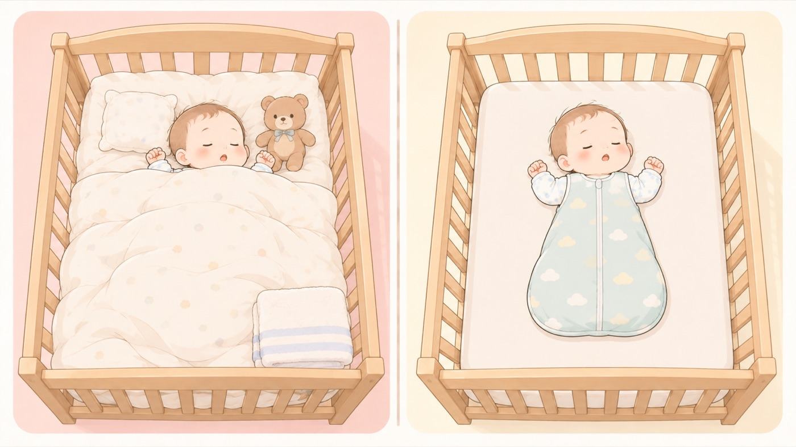

そろえるもの
寝床にそろえるものと、買わないもの
敷寝具は硬めで平らなものにする。掛け布団は1歳まで使わないので、スリーパーにする
寝床の用意は、買うものより買わないものを決めるほうが大事です。母子健康手帳には、掛け布団は赤ちゃんの顔にかかると窒息のおそれがあるため、1歳までは使わず、スリーパーなどの着るものや空調で寒さを調整すると書かれています。

- すること：敷寝具は、硬めで傾斜のないものを買う
やわらかいクッションや傾斜のあるマットレスは避けます。体が沈み込まず、傾いていないものを選びます。 - すること：掛け布団の代わりに、スリーパーを買う
掛け布団は顔にかかると窒息のおそれがあります。1歳になるまでは使わず、着るもので調整します。 - しないこと：枕、ぬいぐるみ、クッションを買わない
寝床に置くと窒息につながります。赤ちゃんのまわりには何も置きません。
🛍 グッズの選び方
PR- 固綿の敷きマットは、体が沈み込まない硬さのものとして選びやすいです。
- スリーパーは、寝返りを始めてからも使えるので、袖のない形だと腕の動きを妨げません。
- ガーゼを重ねたものは、季節によって枚数の違うものを選べます。
- サンデシカ ベビー敷ふとん 固綿マット レギュラー 70×120cm固綿。沈まない硬さで、ベッドに合うサイズAmazonで見る →（新しいタブで開きます）
- un doudou ベビー敷き布団 70×120cm 厚み6cm（固綿・体が沈み込まない）厚み6cm。沈み込まない硬さをうたっているAmazonで見る →（新しいタブで開きます）
- ニトリ 2つ折り 洗える固わた ベビー敷布団 70×120cm洗える固わた。汚したときに丸ごと洗えるAmazonで見る →（新しいタブで開きます）
- 10mois Hoppetta ふくふくガーゼ ベビースリーパーガーゼ素材。掛け布団をやめる時期の定番Amazonで見る →（新しいタブで開きます）
- プッパプーポ 6重ガーゼスリーパー（袖なし）袖なし。腕が自由に出るAmazonで見る →（新しいタブで開きます）
- 成願 スリーパー 6重ガーゼ ELSP-380（日本製・純綿）6重ガーゼ。冬でも掛け布団なしで足りるAmazonで見る →（新しいタブで開きます）
リンクはAmazonアソシエイトリンクです。当サイトはアフィリエイトプログラムに参加しています。Amazonのアソシエイトとして、当サイトは適格販売により収入を得ています。 選び方の方針
この項目の根拠
- 母子健康手帳 任意様式「新生児（生後約４週間までの赤ちゃん）」（こども家庭庁 母子健康手帳情報支援サイト・PDF）（新しいタブで開きます）
寝具は硬めで平坦なものを使い、柔らかいクッションや傾斜のあるマットレスは避けること。掛け布団は赤ちゃんの顔にかかると窒息のリスクがあるため、1歳までは掛け布団を使用せず、スリーパーなどの着るものや空調で寒さを調整すること。寝床にはぬいぐるみやタオルなどを置かないこと。 - 赤ちゃんが安全に眠れるように ～1歳未満の赤ちゃんを育てるみなさまへ～（こども家庭庁）（新しいタブで開きます）
寝具は硬めで傾斜のないものを使うこと。1歳になるまでは掛け布団を使用しないこと。ぬいぐるみやタオル、電気コードなどを寝床に置かないこと。大人と同じ部屋で赤ちゃん専用の寝床を使用すること。